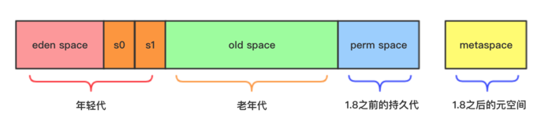
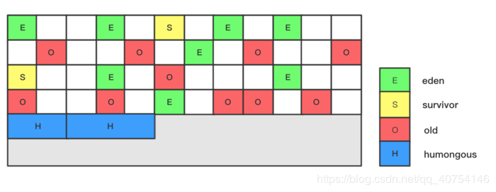
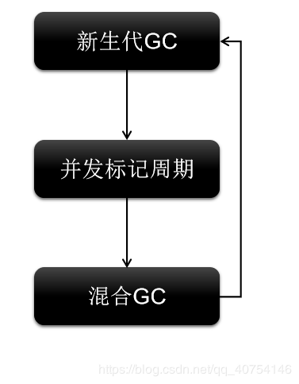
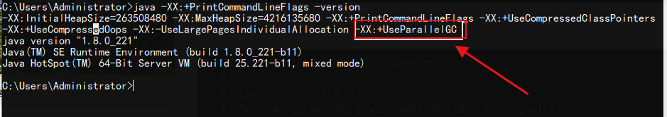

类比日常生活中，如果一个东西经常没被使用，那么就可以说是垃圾。
同理，如果一个对象不可能再被引用，那么这个对象就是垃圾，应该被回收。
垃圾：不可能再被引用的对象。
IBM公司的研究表明，在新生代中的对象 98% 是朝生夕死的。
在实际的 JVM 新生代划分中，不是采用等分为两块内存的形式。而是分为：Eden 区域、Survivorfrom 区域、Survivorto 区域 这三个区域。
所以在HotSpot虚拟机中，JVM 将内存划分为一块较大的Eden空间和两块较小的Survivor空间，其大小占比是8:1:1。当回收时，将Eden和Survivofrom中还存活的对象一次性复制到Survivorto空间上，最后清理掉Survivorfrom和刚才用过的Eden空间。
新生代一般占据堆的1/3空间，老年代占据2/3。
在一个对象被引用时加一，被去除引用时减一，这样我们就可以通过判断引用计数是否为零来判断一个对象是否为垃圾。这种方法我们一般称之为「引用计数法」。主流的Java虚拟机里面都没有选用引用计数算法来管理内存
什么是循环引用?（环）
A 引用了 B，B 引用了 C，C 引用了 A，它们各自的引用计数都为 1。但是它们三个对象却从未被其他对象引用，（假设有1000个对象时，这三个就是垃圾；如果只有4个对象，那么另外一个就是垃圾）只有它们自身互相引用。从垃圾的判断思想来看，它们三个确实是不被其他对象引用的，但是此时它们的引用计数却不为零。
通过一系列名为”GC Roots”的对象作为起始点，从这些节点开始向下搜索，搜索所走过的路径称为引用链(Reference Chain)，当一个对象到GC Roots没有任何引用链相连时，则证明此对象是不可用的。
GC Roots：
根搜索算法：一种通过遍历的方式判断对象是否可达的垃圾标记算法。
它将垃圾回收分为两个阶段：标记阶段和清除阶段。
在标记阶段，标记所有从根节点出发的可达对象。因此，所有未被标记的对象就是未被引用的垃圾对象。
在清除阶段，清除所有未被标记的对象。
问题：产生空间碎片。
将内存分为两部分，每次只使用其中一部分。在垃圾回收时，将正在使用的内存中的存活对象复制到未使用的内存块中，之后清除正在使用的内存块中的所有对象，交换两个内存的角色，完成垃圾回收。
问题：不会产生空间碎片，但内存折半
对比于标记清除算法，在清除阶段，它会将所有的存活对象移动到内存的另一端。之后清理边界之外的所有空间。
这种算法既避免了碎片的产生，又不需要两块相同的内存空间，因此性价比较高。
分代算法，就是根据 JVM 内存的不同内存区域，采用不同的垃圾回收算法。
例如对于存活对象少的新生代区域，比较适合采用复制算法。这样只需要复制少量对象，便可完成垃圾回收，并且还不会有内存碎片。
而对于老年代这种存活对象多的区域，比较适合采用标记压缩算法或标记清除算法，这样不需要移动太多的内存对象。
通过JVM参数-XX:+UseSerialGC可以使用串行垃圾回收器。
参数控制：-XX:+UseParNewGC
开启参数：-XX:+UseParallelGC
GC自适应调节策略：Parallel Scavenge收集器可设置-XX:+UseAdptiveSizePolicy参数
当开关打开时不需要手动指定新生代的大小（-Xmn）、Eden与Survivor区的比例（-XX:SurvivorRation）、晋升老年代的对象年龄（-XX:PretenureSizeThreshold）等，虚拟机会根据系统的运行状况收集性能监控信息，动态设置这些参数以提供最优的停顿时间和最高的吞吐量，这种调节方式称为GC的自适应调节策略。
以新生登记为例，假设新生人数较多，数量在5000，使用串行的方式，可以理解为一个人复制5000的登记工作；
效率可想而知。
使用并行的方式可以理解为有100个人负责登记，效率就会显著提升。
但如果新生只有50个人，一个人登记就绰绰有余了。
新生的数量可以理解为GC回收对象的数量，而负责登记的人就是CPU的核心计算数量。
对于新生代，回收次数频繁，使用并行方式高效。
对于老年代，回收次数少，使用串行方式节省资源。（CPU并行需要切换线程，串行可以省去切换线程的资源）
通过JVM参数 -XX:+UseG1GC 使用G1垃圾回收器
G1特点：
并行与并发：并行体现在G1可以利用CPU的多个核心，缩短stop the world时间；并发体现在某些收集器和Java线程可以同时执行。
分代收集
空间整合，G1收集器采用标记整理算法，不会产生内存空间碎片。分配大对象时不会因为无法找到连续空间而提前触发下一次GC。
能建立可预测的时间停顿模型，可以指定在M时间段内，垃圾回收时间不能超过N
并行与并发：
并行：同时处理多个任务。
并发：串行处理多个任务，但任务之间的切换很快，感觉上是并行执行。
并行是建立在多核CPU上的，多核指的是在一块CPU上集成多个计算引擎。引擎之间可同时进行运算。
举例：
单核运算时代就好比400米短跑，每跑完一个400米执行完一个任务。
多核运算时代可以理解为4*100接力，虽然单个任务的执行和单核一样，但对于多个任务来说，单核是需要完成400的全部距离才能进行第二个任务。但多核只要第一个人跑完了100米，就可以开始第二个任务了。
并行处理多个任务的能力可以理解为核心之间的接力赛。
并发是指通过CPU在多个任务之间快速切换来达到同时执行的效果。
在G1回收器之前，垃圾回收器分配的内存都是连续的。

在G1回收器中，垃圾回收器将内存分为大量区块。

humongous：存储巨型对象，当对象超过普通区块的一半时，分配一个巨型区块。
新生代GC
Eden区被占满，新生代GC启动，回收Eden和Survivor。
注：survivor会被回收掉一部分，但回收后至少有一个survivor区存在。
为什么？？？
新生代GC采用复制算法，将Eden区中的存活对象复制到Survivor区中。
并发标记周期
混合回收
优先回收垃圾比例高的区域。（GC：Garbage First）
执行年轻代和老年代GC。
混合GC执行多次之后，会触发新生代GC。然后循环：

Minor GC：新对象产生，申请Eden区失败后会触发Minor GC
Full GC：对整个堆的对象进行清理。
触发条件
System.gc()方法的调用
老年代空间不足
方法区空间不足
java -XX:+PrintCommandLineFlags -version-XX:+UseParallelGC
使用Parallel Scavenge新生代回收器和Parallel Old老年代回收器

[GC (Allocation Failure) [PSYoungGen: 5986K->696K(8704K)] 5986K->704K(9216K), 0.0018526 secs] [Times: user=0.00 sys=0.00, real=0.00 secs]
[GC (Allocation Failure) [PSYoungGen: 4792K->696K(8704K)] 4800K->704K(9216K), 0.0031653 secs] [Times: user=0.00 sys=0.00, real=0.00 secs]
[GC (Allocation Failure) [PSYoungGen: 4945K->680K(8704K)] 4953K->688K(9216K), 0.0022002 secs] [Times: user=0.00 sys=0.00, real=0.00 secs]
[GC (Allocation Failure) [PSYoungGen: 4776K->712K(8704K)] 4784K->720K(9216K), 0.0007493 secs] [Times: user=0.00 sys=0.00, real=0.00 secs]
[GC (Allocation Failure) [PSYoungGen: 4808K->648K(8704K)] 4816K->656K(9216K), 0.0008800 secs] [Times: user=0.00 sys=0.00, real=0.00 secs]
[GC (Allocation Failure) [PSYoungGen: 4744K->664K(8704K)] 4752K->672K(9216K), 0.0008349 secs] [Times: user=0.00 sys=0.02, real=0.00 secs]
[GC (Allocation Failure) --[PSYoungGen: 4760K->4760K(8704K)] 4768K->5268K(9216K), 0.0022344 secs] [Times: user=0.00 sys=0.00, real=0.00 secs]
[Full GC (Ergonomics) [PSYoungGen: 4760K->113K(8704K)] [ParOldGen: 508K->496K(512K)] 5268K->609K(9216K), [Metaspace: 3222K->3222K(1056768K)], 0.0069196 secs] [Times: user=0.00 sys=0.00, real=0.01 secs]
[GC (Allocation Failure) [PSYoungGen: 4209K->192K(8704K)] 4705K->688K(9216K), 0.0007751 secs] [Times: user=0.00 sys=0.00, real=0.00 secs]
[GC (Allocation Failure) [PSYoungGen: 4288K->160K(8704K)] 4784K->656K(9216K), 0.0018608 secs] [Times: user=0.00 sys=0.00, real=0.00 secs] Allocation Failure
表明本次引起GC的原因是因为在年轻代中没有足够的空间能够存储新的数据了。
PSYoungGen
新生代Eden和FromSpace，PS指Parallel Scavenge ，
PSOldGen
老年代
[PSYoungGen: 5986K->696K(8704K)] 5986K->704K(9216K)
中括号内：GC回收前年轻代堆大小，回收后大小，（年轻代堆总大小）
括号外：GC回收前年轻代和老年代大小，回收后大小，（年轻代和老年代总大小）
user代表用户态回收耗时，sys内核态回收耗时，rea实际耗时。